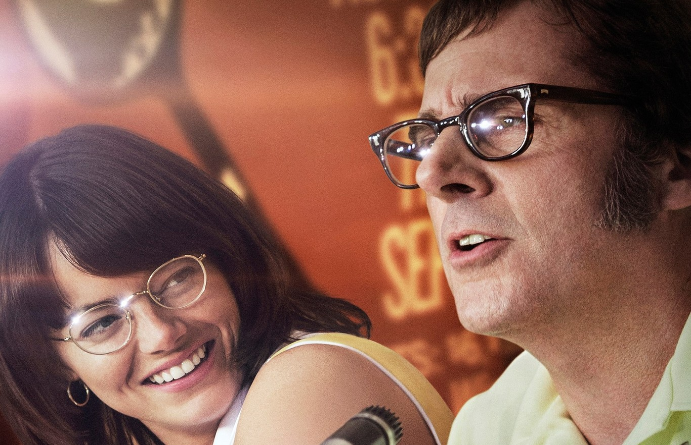
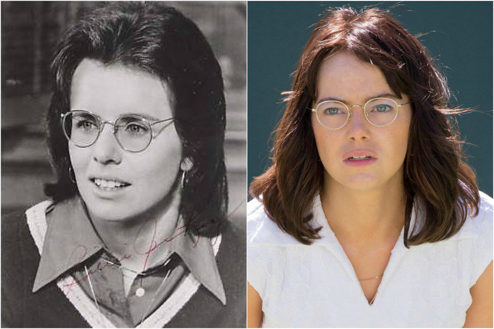

Inicio
Película

Battle of the Sexes (en español, La batalla de los sexos) es una película de 2017 dirigida por Valerie Faris y Jonathan Dayton escrita por el guionista británico Simon Beaufoy. La película está basada en el partido de tenis celebrado en el año 1973 que enfrentó a la Billie Jean King y Bobby Riggs. El filme está protagonizado por Emma Stone y Steve Carrell como King y Riggs respectivamente. También participan Andrea Riseborough, Elisabeth Shue, Austin Stowell, y Sarah Silverman.La película gira en torno al partido que enfrentó a Billie Jean King (Emma Stone) y Bobby Riggs (Steve Carell) en el año 1973, entrelazando estos hechos con sus vidas personales. de los protagonistas. King y Gladys Heldman (Sarah Silverman) se enfrentan a Jack Kramer (Bill Pullman) quien ha anunciado un torneo de tenis en el que el premio mayor para las mujeres es una octava parte del premio masculino, a pesar de la igualdad de ventas de entradas. King y Heldman amenazan con comenzar su propia gira, pero Kramer no cambiará los términos, citando la inferioridad del tenis femenino. King y Heldman deciden crear una nueva asociación femenina de tenis al margen de la oficial y como consecuencia Kramer las expulsa. La gira de mujeres tiene problemas hasta que Heldman gana un lucrativo patrocinio de Virginia Slims cigarrillos. Billie Jean comienza una aventura con Marilyn Barnett (Andrea Riseborough), su peluquera, amenazando su matrimonio con Larry King (Austin Stowell).Mientras tanto, el matrimonio de Riggs con la Priscilla Wheelan (Elisabeth Shue) está en problemas debido a su adicción al juego. Expulsado de su casa cuando no puede ocultar un Rolls Royce que ganó en una apuesta relacionada con el tenis, se topa con la idea de un desafío contra la jugadora más importante, presumiendo de que incluso a los 55 años puede vencer a cualquier mujer. King declina, pero Margaret Court (Jessica McNamee), quien recientemente venció a King en la final del torneo femenino de Virginia Slims, acepta. Riggs derrota fácilmente a Court y King decide que ella tiene que aceptar su desafío. King entrena intensamente, mientras que Riggs se relaja. King se opone a Kramer como locutor del juego, amenazando con no jugar a menos que se retire, lo que hace. El partido inicia reñido, no obstante, la falta de preparación de Riggs se hace notar, por lo que King termina ganando con facilidad.
